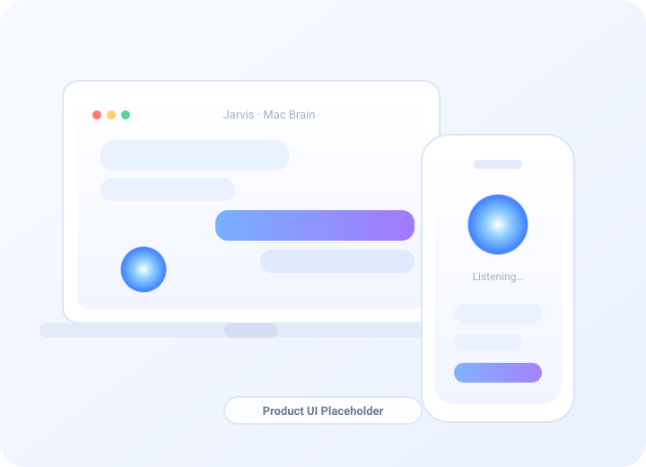
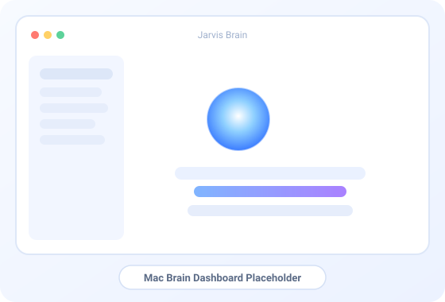
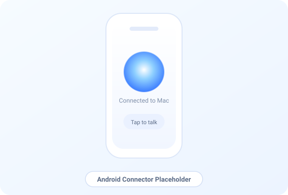
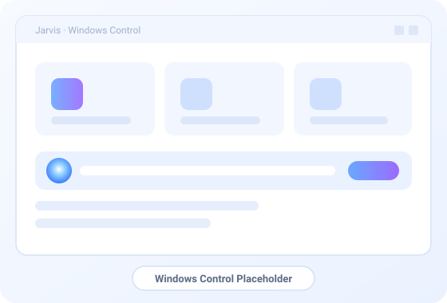

Mac is the brain
The Mac runs the conversation, memory, and planning. It orchestrates everything and coordinates your connected devices behind the scenes.
Jarvis connects your Mac, Android phone, and Windows machine into one natural, conversation-first assistant.

Jarvis listens, understands, acts, and keeps talking. Your Mac does the thinking, your phone reaches into the real world, and your PC stays in the flow — so it feels like one assistant, not three apps.
The Mac runs the conversation, memory, and planning. It orchestrates everything and coordinates your connected devices behind the scenes.
Your phone is how Jarvis reaches the real world — calls, messages, camera, and location — with a clean, simple app you barely have to think about.
On your PC, Jarvis opens apps and supports your workflow — controlled desktop help that stays out of the way until you need it.
You speak the way you normally would. Jarvis figures out what you mean, quietly handles anything that needs doing, and stays in the conversation the whole time. No commands to memorise. Easy enough for anyone in the house.
Most assistants force every sentence into a rigid command. Miss the magic phrase and you get “I can’t do that.” Jarvis treats what you say as a real conversation first, then notices the action hidden inside it.
I’ve had a bad day. Can you open the camera so I can check my face?
Oh no — sorry it’s been rough. Camera’s up so you can take a look. Want to talk about what happened?
Everything below works through plain conversation. Ask for it the way you’d ask a person.
Chat the way you actually talk. Jarvis follows context and keeps up — no robotic phrasing required.
It spots the thing you want done inside a normal sentence and just does it.
Reach your real phone — open apps, act on notifications, and trigger phone features by voice.
Your Mac plans, remembers, and coordinates every device so the whole system feels like one mind.
Launch apps and drive desktop workflows on your PC without breaking your focus.
Send a text, fire off a WhatsApp, or place a call — Jarvis confirms before anything leaves your phone.
Open the camera, grab a photo, or capture the screen the moment you ask.
Add events, set reminders, and check what’s next — all in the same breath as the rest of your chat.
Ask where you are, how long a trip takes, or when you’ll arrive, and get a straight answer.
Dim the lights, set the thermostat, or run a scene through your existing Home Assistant setup.
Wherever it can, Jarvis acts on your own devices first — quick, private, and dependable.
If the fast path isn’t available, Jarvis falls back gracefully and keeps going instead of giving up.
Speak to it and hear it answer in a natural voice — hands-free from across the room.
Talk over it any time. Jarvis stops, listens, and adjusts — just like a real conversation.
Built to keep sensitive actions on your own devices, with diagnostics kept out of your way.
Actions run quietly in the background so the conversation never has to stop and wait.
Set it up once on your Mac, pair your phone, and start talking.
Each platform plays to its strengths — and they stay in sync so you don’t have to think about which one is doing the work.
Your Mac runs the conversation, holds the memory, and does the planning. It handles the deeper tasks and coordinates every connected device, so the assistant always feels consistent no matter where you’re talking to it.

The Android app is deliberately simple — an orb, a tap-to-talk button, and a clear connection status. It quietly handles calls, messages, WhatsApp, camera, and location, asking only for the permissions it genuinely needs. No dials, no diagnostics, no clutter.

On Windows, Jarvis launches apps and supports your productivity workflows, with keyboard and mouse automation where it’s available. It lives in the system tray and stays out of the way — built to grow with new desktop abilities over time.

There’s nothing to configure in the moment. You just talk.
Say what’s on your mind, the way you’d say it to a person.
It reads the whole sentence — tone, context, and meaning — not just keywords.
If something needs doing, Jarvis finds the command tucked inside your words.
The action runs in the background while the conversation carries on.
The difference isn’t one feature — it’s how the whole thing behaves.
| Capability | Jarvis | Standard assistant |
|---|---|---|
| Natural conversation | ✓ | Limited |
| Embedded actions | ✓ | — |
| Multi-platform control | ✓ | — |
| Android phone control | ✓ | Limited |
| Mac brain orchestration | ✓ | — |
| Windows support | ✓ | — |
| Local-first design | ✓ | — |
| Keeps talking after actions | ✓ | — |
| Advanced personal automation | ✓ | Limited |
| Home Assistant integration | ✓ | Varies |
Jarvis is designed to keep your actions close to home and put you in control — without overpromising what any software can guarantee.
Jarvis prefers to act on your own devices first, falling back to other paths only when it has to.
Where it can, your phone carries out phone actions itself rather than routing them elsewhere.
Your own Mac coordinates the conversation and planning as the hub of your setup.
Sensitive actions like sending a message or placing a call are confirmed before they happen.
Technical internals are kept out of everyday use, so the experience stays calm and simple.
No clutter, no dashboards in your face — just an assistant that does what you ask.
Bring your Mac, phone, and PC together into one assistant that talks like a person and acts like a pro.